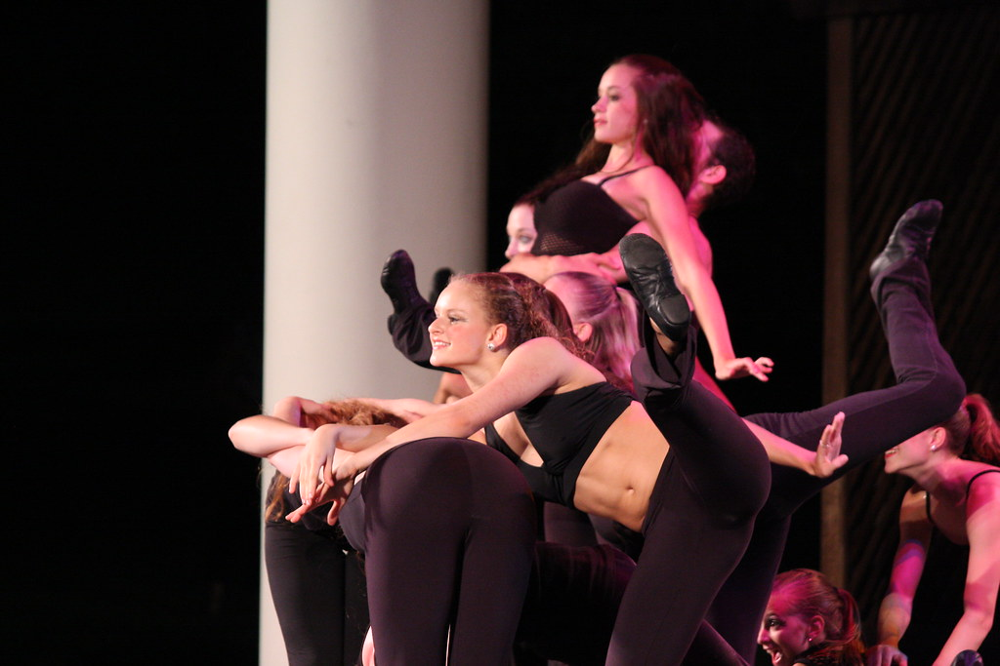

Музыка · 33-бөлім · Балет Music · Section 33 · Ballet Музыка · Раздел 33 · Балет
Балет — мазмұны сөзсіз, оркестр музыкасы аясында бимен берілетін музыкалық-театрлық жанр. Ballet is a musical-theatre genre where the story is told through dance, without words, to the music of an orchestra. Балет — музыкально-театральный жанр, где содержание выражается танцем под музыку оркестра, без слов.
Балет — музыкалық-театрлық жанр, мұнда мазмұн би мен пантомима арқылы, оркестр музыкасы аясында беріледі — сөзсіз. Ballet is a musical-theatre genre in which the content is conveyed through dance and mime, to the music of an orchestra — without words. Балет — музыкально-театральный жанр, где содержание выражается танцем и пантомимой под музыку оркестра — без слов.
Балет бірнеше өнерді біріктіреді: музыка, би (хореография), сахналау және актёрлік ойын. Ballet brings together several arts: music, dance (choreography), stage design and acting. Балет объединяет несколько искусств: музыку, танец (хореографию), сценографию и актёрскую игру.
МузыкаMusicМузыка
БиDanceТанец
СахналауSceneryСценография
ОйынActingАктёрская игра
💡 Опера дауыспен (әнмен) айтады, ал балет денемен — бимен «сөйлейді». Сондықтан балет — сөзсіз спектакль. 💡 An opera "speaks" with the voice (singing), while ballet "speaks" with the body — with dance. So ballet is a wordless performance. 💡 Опера «говорит» голосом (пением), а балет — телом, танцем. Поэтому балет — это спектакль без слов.

Па-де-де Pas de deux Па-де-де
екеудің биі (әдетте бас солистер) a dance for two (usually the lead soloists) танец двоих (обычно главных солистов)
2Вариация Variation Вариация
бір әртістің жеке (соло) биі a solo dance of one artist сольный танец одного артиста
1Адажио Adagio Адажио
баяу, лирикалық би a slow, lyrical dance медленный лиричный танец
♪Кордебалет Corps de ballet Кордебалет
әртістер тобының жаппай биі (фон, ансамбль) a mass dance of a group of artists (backdrop, ensemble) массовый танец группы артистов (фон, ансамбль)
∞Балет музыкасы биге арналған, бейнелі әрі айқын ырғақты. Көп билер вальс ырғағында (3/4) жазылады. Ballet music is made for dancing, vivid and with a clear rhythm. Many dances are written in waltz time (3/4). Музыка балета танцевальна, образна и с ясным ритмом. Многие танцы написаны в ритме вальса (3/4).
🎧 басып, нәзік 3/4 вальс әуенін тыңдаңыз tap and hear a graceful 3/4 waltz melody нажмите и послушайте плавную мелодию вальса 3/4
Әлемге әйгілі балеттерді ұлы орыс композиторы П. И. Чайковский жазды: The most famous ballets in the world were composed by the great Russian composer P. I. Tchaikovsky: Самые знаменитые балеты в мире написал великий русский композитор П. И. Чайковский:
«Аққу көлі» "Swan Lake" «Лебединое озеро»
П. И. Чайковский P. I. Tchaikovsky П. И. Чайковский
«Шелкунчик» "The Nutcracker" «Щелкунчик»
П. И. Чайковский P. I. Tchaikovsky П. И. Чайковский
«Ұйқыдағы ару» "The Sleeping Beauty" «Спящая красавица»
П. И. Чайковский P. I. Tchaikovsky П. И. Чайковский
📌 Бұл балеттердің музыкасы соншалықты әсем — оны би сахнасынсыз, концертте де жиі орындайды. 📌 The music of these ballets is so beautiful that it is often performed in concert, even without the dance on stage. 📌 Музыка этих балетов настолько прекрасна, что её часто исполняют и в концерте — даже без танца на сцене.